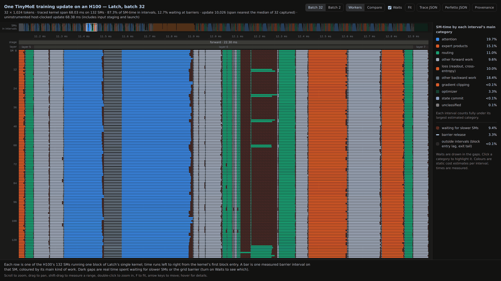

Open problems
This preview includes runnable examples for a limited set of models and learning rules.
Performance
- Idle time at grid barriers. Each interval ends at a grid barrier, so every SM waits for the slowest one. A per-SM trace of one TinyMoE update on an H100 shows SMs waiting 13% of the time at 32 × 1024 and 20% at 2 × 1024. At 32 × 1024, each layer’s expert-dispatch gather runs on one SM and its bucket ordering on 16 while the other SMs wait, about 2 ms per update. Starting each task when its own inputs are ready, instead of at the next grid barrier, could recover part of this time.

One forward layer of a batch-32 TinyMoE update, one row per SM. Dark hatched gaps are SMs waiting for slower SMs; the long gap near the middle is the routing step running on a few SMs. Explore the full trace. - Fewer barrier-separated phases. Granite spends about 25 ms on 1,200 small elementwise, normalization and routing intervals. Standalone elementwise phases take 55% of E2-TTT’s memory-region time at four sequences. Combining these operations could reduce that cost.
- Large-batch efficiency. The current compiler’s same-session update speedup is about 2.75× at 2 × 1024 and 1.67× at 32 × 1024 against the conventional trunk-graph control. An older measurement saved about 10% at the published batch of 16 × 8 × 1024. Granite remains slower at 4,096 tokens.
- Long-sequence attention. On Granite at 4,096 tokens, Latch's attention takes about 20 ms per update against about 14 ms for FlashAttention-2.
- Gradients of repeated gathers. Top-8 routing sends each token to eight experts. Latch’s deterministic backward scatter takes about 32 ms against about 5 ms conventionally. The number of contributions is known in advance. A direct sum per row may be faster.
- Feed-forward blocks. Latch’s feed-forward blocks remain 1.24–1.45× slower than compiled PyTorch.
Generality
- New models and learning algorithms. Port another public model or test a learning rule that uses frequent small updates.
- Smaller activation arenas. The current compiler includes opt-in lifetime and recomputation rules (
memory_rules). E2-TTT’s B4remat_absorbedprogram matches the validated memory-lane program, which reduced peak allocated memory from 75.3 to about 50 GiB. Broader automatic planning remains open; the published B8 setting was estimated at 137 GiB before recomputation. E2-TTT’s research runner is not included. - Multiple GPUs. This release runs on one H100. The experimental distributed-training implementation is excluded. Earlier two-GPU research was slower than one GPU on TinyMoE and missed a late-training numerical check. A convincing future test needs a model too large for one GPU.
- Other GPUs. Latch generates programs for NVIDIA H100 only.
Correctness
- Keep numerical checks broad. The current compiler fixes the
rpackbgated-attention defect by tracking arena lifetimes from the earliest writer. The gated TinyMoE checks pass. This fix does not requalify the older skips-and-gates learning result, whose separate trained-state audit remains failed. - Numerical checks for BF16 expert models. Tested BF16 implementations of Granite differ from FP64 by a median 25–33% on individual accumulation microbatches at trained states. Latch and PyTorch also sometimes exceed the 0.08 gradient gate at TinyMoE’s trained 2 × 512 states. The latest tuned 2 × 1024 and recipe-Q candidate states pass their tested gates; these are different programs. Keep the unchanged gates and the failures visible when testing new candidates.
Build
- Faster lowering. Earlier 0.9.0rc1 measurements cut TinyMoE build time from 544 to 283 s on 64 vCPUs with identical output. Lowering still uses single-threaded Python and takes the largest share of most builds.
- Automatic build configuration. The compiler could choose device units, outlining and shared-memory reserves. These require explicit flags today.